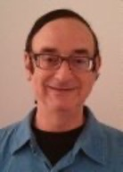
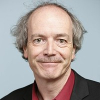
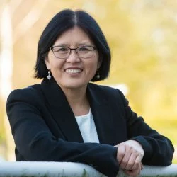
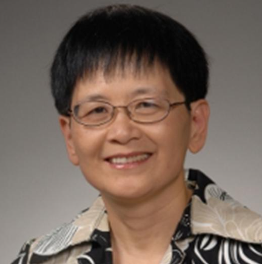

Invited Speakers
We are pleased to have the following invited speakers at SSR 2024.
Moti Yung
|  |
Biography: Moti Yung is a Distinguished Scientist with Google and an adjunct senior research faculty at Columbia University. He got his PhD from Columbia University in 1988. Previously, he was with IBM Research, Certco, RSA Laboratories, and Snap. Yung is a fellow of the IEEE, the ACM, the International Association for Cryptologic Research (IACR), and the European Association for Theoretical Computer Science (EATCS). Among his awards is the IEEE-CS Computer Pioneer Award. He is a fellow of the American Academy for Arts and Sciences. Title:
Abstract: |
Bart Preneel
|  |
Biography:Bart Preneel received the Electrical Engineering degree and the Doctorate in Applied Sciences from KU Leuven. He is currently full professor (gewoon hoogleraar) at KU Leuven and heads the COSIC group. He was visiting professor at the Danish Technical University (DTU) (2007), TU Graz (1997-2006), the University of Bergen (1997-2001), Ruhr-Univ.t in Bochum (2001-2002) and at the University of Ghent (1994-2002). He was a scientific advisor at Philips Research in the Netherlands. During the academic year 1993-1994, he was a research fellow of the EECS Department at UC Berkeley. His main research interests are cryptology, cybersecurity and privacy. He has authored and co-authored more than 400 scientific publications and is an inventor of five patents. He has served as a member of the Editorial Board of five journals and has served as program chair of 20 conferences including Eurocrypt, CHES, FSE, ESORICS and Financial Cryptology. He has been an invited speaker at more than 120 conferences in more than 40 countries. He has testified multiple times for the European Parliament. In 2014 he received the RSA Award for Excellence in the Field of Mathematics, in 2016 he received the Kristian Beckman Award from IFIP TC11 and in 2018 he received the ESORICS Award for Outstanding Research. Title:
Abstract: |
Liqun Chen
|  |
Biography:Liqun joined the Department of Computer Science at the University of Surrey as Professor in Secure Systems in 2016. Prior to this appointment, she was a Principal Research Scientist at Hewlett Packard Laboratories in Bristol, UK, which she joined in 1997. Before that, she worked at Royal Holloway, University of London, the University of Oxford, and Southeast University in P.R. China. Liqun is a visiting professor at Southeast University. Title:
Abstract: |
Lily Chen
|  |
Biography:Dr. Lily Lidong Chen is a mathematician and NIST fellow. She served as the manager of Cryptographic Technology Group for more than a decade before she was selected as a NIST fellow in 2023. She has led the effort in developing cryptographic standards published in Federal Information Processing Standards (FIPS) and NIST Special Publications (SP). She is a pioneer in developing post-quantum cryptography standards and has been actively explored many advanced cryptography areas for standardization. Her research interests include cryptography, network security, and security in communications. Dr. Chen has actively contributed to cryptographic and security standards development by IEEE-SA, ISO, and other standards organizations.Title:NIST Post-Quantum Cryptography Standardization
Abstract: |